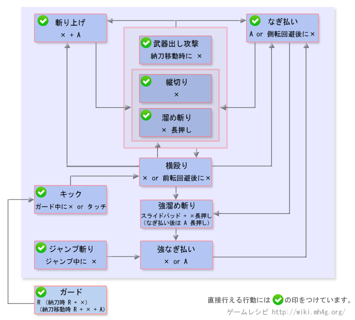

大剑操作 - 【MHXX】怪物猎人双十字
大剑操作[狩技]
| 动作名称 |
説明
|
系統 |
| 兽宿し【狮子】 |
将斩击产生的剑气收纳到自己身体内，令下一次攻击威力提升 |
|
| 震怒龙怨斩 |
将力气蓄积到最大，全力发动斩击，适当时机合适则不会被斩击 |
|
| 地衝斩 |
与地面摩擦向前方放出强力的冲击波 |
|
大剑MHX操作
| 按键 |
工会 |
强袭 |
空战 |
武士道 |
| X |
纵斩、长按蓄力斩 |
纵斩、长按蓄力斩 |
纵斩、空中长按蓄力斩 |
纵斩、长按蓄力斩 |
| A |
横扫 |
横扫 |
横扫 |
横扫 |
| B |
前转回避 |
前转回避 |
跳跃回避 |
前转回避 (精确回避) |
| Y |
納刀 |
納刀 |
納刀 |
納刀 |
| R |
防御 |
防御 |
防御 |
防御 |
| X + A |
挑飞上斩 |
挑飞上斩 |
挑飞上斩 |
挑飞上斩 |
| 特殊攻击 |
踢击 |
踢击 |
踢击 |
踢击 |
| 納刀时にスライドパッド + X |
|
|
跳跃蓄力斩 |
|
| 前置任务 |
蓄力斩根据蓄力的时间决定攻击的威力 |
蓄力斩根据蓄力的时间决定攻击的威力 |
空中纵斩蓄力 |
跳跃回避后按X可高速蓄力 |
以下是过去作的数据。MHX发売后上个作性数据变更。。
大剑操作[攻击]
| 动作名称 |
操作方法
|
系統 |
| 纵斩 |
纳刀状态移动中短按X |
切断 |
| 挑飞上斩 |
A + X |
切断 |
| 横扫 |
A |
切断 |
| 横殴り |
纵斩后按X，踢击后按X，前回避后按X |
打击 |
| 跳斩 |
跳跃中按X |
切断 |
| 蓄力斩(0段階) |
纳刀状态移动中长按X之后长按X |
切断 |
| 蓄力斩(1段階) |
短按X后释放 |
切断 |
| 蓄力斩(2段階) |
长按X后释放 |
切断 |
| 蓄力斩(3段階) |
长按X后释放 |
切断 |
| 蓄力斩(蓄力过头) |
长X后不释放 |
切断 |
| 強蓄力斩(0段階) |
横殴之后不动左摇杆按X |
切断 |
| 強蓄力斩(1段階) |
横殴之后不动左摇杆短按X之后释放 |
切断 |
| 強蓄力斩(2段階) |
横殴之后不动左摇杆长按X之后释放 |
切断 |
| 強蓄力斩(3段階) |
横殴之后不动左摇杆长按X之后释放 |
切断 |
| 強横扫 |
跳斩后接A和X，强蓄力斩后长按A和X后释放 |
切断 |
| 強横扫(1段階) |
跳斩后接A和X，强蓄力斩后短按A和X后释放 |
切断 |
| 強横扫(2段階) |
跳斩后接A和X，强蓄力斩后长按A和X后释放 |
切断 |
| 強横扫(3段階) |
跳斩后接A和X，强蓄力斩后长按A和X后释放 |
切断 |
大剑操作[其他]
| 动作名称 |
操作方法
|
系統 |
| 踢击 |
特殊攻击防御中按X |
|
| 护手 |
拔刀状态按R |
|
| 武器出 |
纳刀状态停止时，同时按R+X，移动中按R+A+X |
|
| 回避行动 |
B |
|
| 武器納 |
Y |
|
